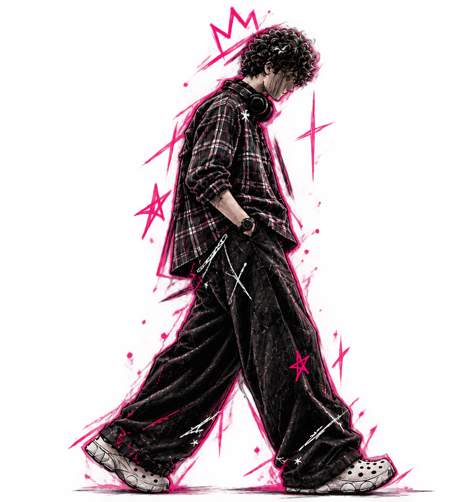
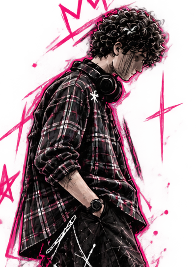
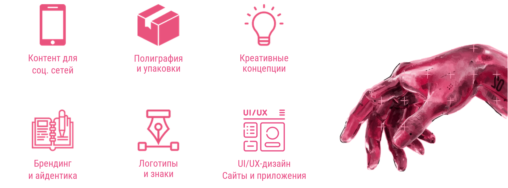
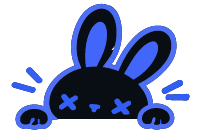
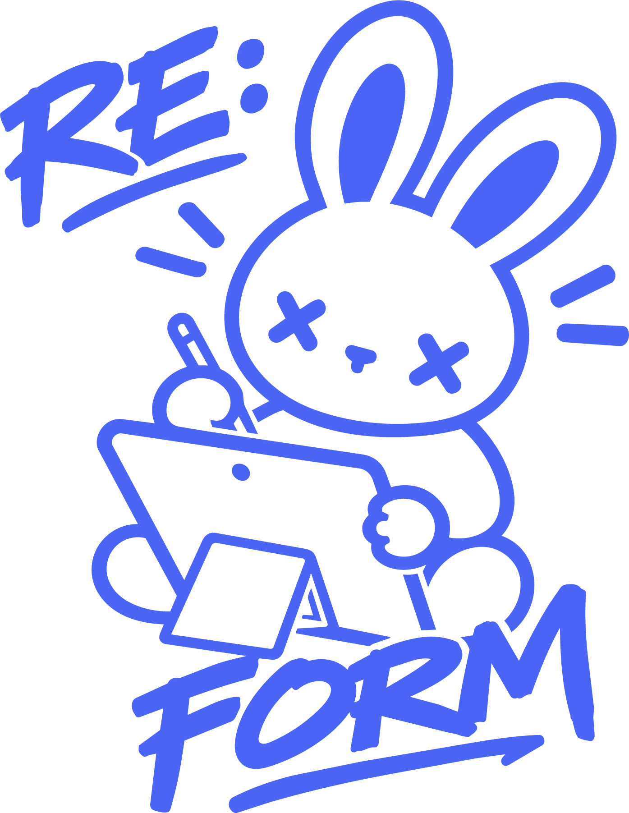
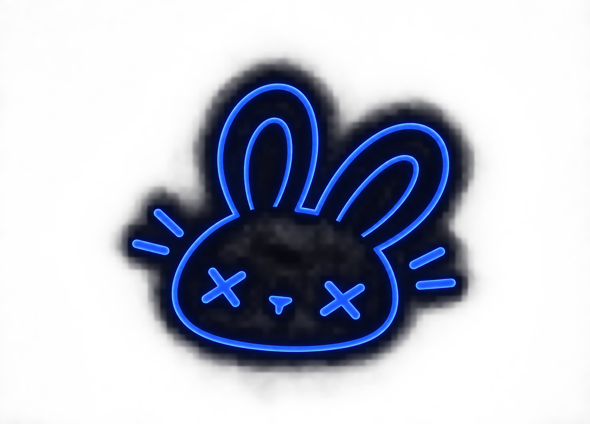
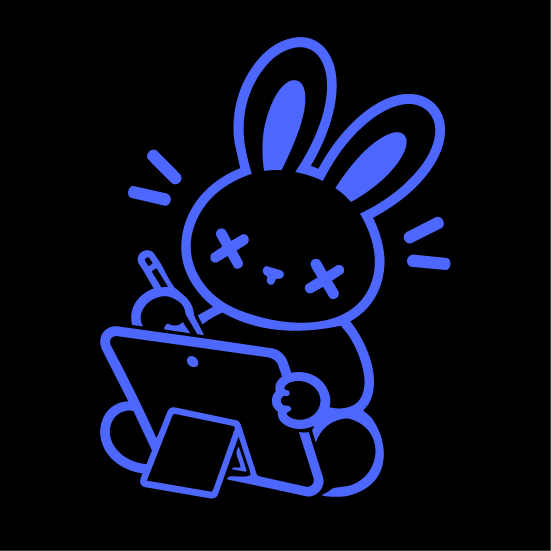

Графический дизайнер · BeePro
Карточки товаров для сайта.

IDEAS WITHГРАФИЧЕСКИЙ | МУЛЬТИДИСЦИПЛИНАРНЫЙ ДИЗАЙНЕР
Превращаю идеи в визуальные истории.
Дизайн с характером. Без скучных решений.

Приветствую, я SoulArt / KRTY || Maria 👋
Я занимаюсь дизайном, создаю самые разные вещи и довожу каждый проект до действительно красивого результата. Если тебе нужен стильный, аккуратный и цепляющий визуал — ты по адресу.
В дизайне с 2022 года. Я из России, развиваю навыки через личные и учебные проекты и открыта к творческому сотрудничеству.
Мне близки смелые идеи, выразительная типографика и иллюстрации с характером. Люблю соединять аккуратную систему с живой, немного бунтарской эстетикой.

| Основа визуала | Практика дизайна |
|---|---|
| Композиция и иерархия | Работа с референсами и мудбордами |
| Типографика | Дизайн постеров и баннеров |
| Цветокоррекция и гармония | Разработка айдентики и логотипов |
| Вёрстка и работа с сетками | Карточки товаров, обложки и контент для соцсетей |
Русский — Родной
Английский — Базовый
Карточки товаров для сайта.
Съёмка мероприятий и портретов.
Создание карточек и визуальных материалов.
Графический дизайн
Композиция, типографика, цвет, айдентика и digital-дизайн. Практика и современные подходы.
still learning.
ОДИН ЧЕЛОВЕК + ИИ
one mind.RE: FORM — это не команда в классическом смысле. Это мой личный проект, где я выступаю одновременно дизайнером, разработчиком, менеджером и идейным вдохновителем.
Авторский проект, реализуемый силами одного человека.
От концепции и дизайна до написания кода и тестирования.
Я объединяю дизайн и программирование в одном процессе. Мне не нужно ждать разработчика или дизайнера — я делаю всё сама. А ИИ (вайбкодинг) помогает мне ускорить рутинные задачи, генерировать код и отлаживать его. Это позволяет одному человеку создавать полноценные приложения.
Решения принимаются мгновенно, без согласований.
Дизайн и код не конфликтуют — они создаются одним человеком.
Я могу менять направление проекта на лету.
Каждый проект — это моё видение от начала до конца.
Интеллектуальная экосистема для планирования жизни с ИИ-ассистентом EVE.
Обсудить проект ↗

Твой путь к осознанным переменам.
Дизайн. Код. ИИ. Всё в одном.
Одна идея. Один человек. Один продукт.
Нужна айдентика, оформление издания или визуальные материалы? Расскажи о своей задаче.
Идеи. Дизайн. Немного магии.
«Главное — живи! Не существуй ради оценок, зарплаты или одобрения. Живи так, чтобы каждый день, ложась спать, ты мог сказать: “Да, сегодня было круто!”»